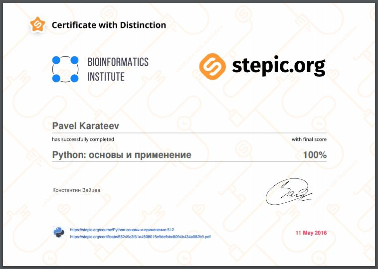

Завершен курс "Python основы и применение"
Завершил курс "Python - Основы и применение" от Stepic.org. Несмотря на название курс оказался весьма интересным и не таким уж и базовым - полные новички в Python могут столкнуться с проблемами. Мне очень понравилось, что были разобраны некоторые традиционно пропускаемые вопросы (пресловутый Method Resolution Order), которые как раз очень любят спрашивать на собеседованиях. Чуть подробнее о плюсах и минусах, а также краткое содержание внутри.
{kind=link}
Содержание
- Базовые принципы языка Python
- Модель данных: объекты
- Функции и стек вызовов
- Пространство имен и области видимости
- Введение в классы
- Наследование классов
- Стандартные средства языка Python
- Ошибки и исключения
- Работа с кодом: импорты и модули
- Итераторы и генераторы
- Работа с файловой системой и файлами
- Работа с функциями: functools и лямбда функции
- Стиль программирования: pep8 и документация
- Применение Python: анализ текста
- Стандартные методы и функции для строк
- Регулярные выражения в Python
- Обзорно об интернете: http, html, requests
- Форматы текстовых файлов: CSV, JSON
- API
- XML, библиотека ElementTree, библиотека lxml
Плюсы
- Затронуты важные углубленные темы (MRO, namespaces)
- Хороший стартовый обзор стандартной библиотеки
- Интересные практические задания по работе с файлами, сетью и API
Минусы (условные)
- Короткий (всего 3 модуля)
- Затронутые темы не объясняются подробно
- Не подходит для полных новичков
Резюме
Отличный курс для тех кто прошел базовое обучение Python и теперь не знает куда податься. Здесь еще раз пробегутся по важным особенностям языка и дадут несколько хороших практических заданий, чтобы вы могли прочувствовать на что способен язык.